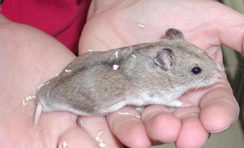
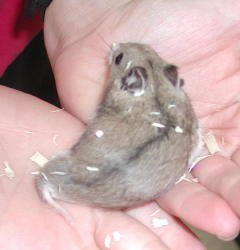

| The Chinese hamster (Cricetus griseus) is the small hamster pictured above. It is often referred to as a dwarf hamster, but it actually belongs to a different hamster family than the dwarf Campbells, winter whites, and Roborovskis. The Chinese hamster is part of the ratlike family of hamsters. While Syrians have been legal pets in California for some time, restrictions on the dwarf hamster family were lifted only about 10 years ago, when the California Fish and Game Code was amended to permit the Phodopus family of hamsters, namely the Campbells, winter whites, and Roborovskis. The family to which the Chinese hamster belongs was not included. They are restricted as detrimental animals in our state. Here is an excerpt from the Fish and Game Code, Title 14, Section 671, Subsection c (2)(J)1b describing the hamsters which are are not restricted: Domesticated races of golden hamsters of the species Mesocricetus auratus and domesticated races of dwarf hamsters of the GenusPhodopus not restricted In Fish and Game terminology, the Chinese hamsters are not "illegal." They are "restricted." This means that a person may own, transport, exhibit and/or breed these animals if they obtain the proper permits. Permits are granted in cases such as licensed exhibitors or research labs. Few if any of us would be able to obtain such a permit. Most rescuers and shelters would not qualify either. Vets will certainly be inexperienced with restricted species, and some will be loath to treat them. Some may report owners to the Department of Fish and Game. Because the average pet owner cannot legally own these hamsters, we have banned them from all CHA shows. We do not have any objection to these hamsters nor do we consider them bad pets. Many people worldwide enjoy this species. We do believe in upholding the law of our State. If you are found at a show with Chinese Hamsters, you will be asked to leave with these animals regardless of how you acquired them. In 2003, a major pet superstore chain has chosen to sell this species in California stores. Even after a friendly reminder, they have chosen to continue selling this restricted animal. Fish and Game is aware of the issue. If any of you have accidentally purchased one or more of these hamsters, please do not bring them to our shows. Fish and Game has said they will enforce this law with stores, and you should be able to return these animals. Fish and Game recommends that you either return them to the store where you purchased them or take them to a home or pet store outside of the State of California if you are concerned about the store's disposition of these animals. There are penalties if you are found with these animals in your possession. Fish and Game will determine your exacty penalty, but this is a misdemeanor offense. The maximum penalty per offense is 6 months in jail, a $1000 fine, and the loss of your animal. If you have Chinese hamsters, it is much better to notify Fish and Game of your possession of "restricted" animals then to have them find you. If you need contact information on your local Fish and Game Representative, you may either call Fish and Game directly or you may e-mail us at calhamassoc@hotmail.com. We have contact information on the local representatives. I have known people in the past who believed that we should all own various "restricted" animals in an attempt to legalize them. The CHA does not agree with this philosophy. If anyone in the club chooses to pursue legalization of this species, we strongly encourage you to work with Fish and Game directly. To do otherwise places innocent animals at risk. These pictures were taken in a Southern California store. Chinese hamsters generally have a longer, more mouse-like body shape than the Russian Dwarf hamsters. This may be hard to see on youngsters, though. A more obvious feature is probably their tail. Their tail is longer than any of the other hamster species kept as pets. You can see the tail length in these photos. Although these particular Chinese hamsters were properly labeled, do not rely on signage to properly identify a Chinese hamster. Signs can be placed on the wrong cages. Animals can be mixed up after tank. Similarly, do not rely on store employees to properly identify these hamsters, as not many pet-store employees really know the fine distinctions among the hamster species. It's not worth the risk of purchasing a hamster which you may not legally own and whose future would always be uncertain. |
| Chinese Hamsters -- Legal or Illegal in California? by Linda Price |
|  |
|  |